Hermitcraft MMO | Custom Recipies
Great-Axes
Specs
- +20% Critical Chance
- 9.0 Base Attack Damage (+1.5/tier)
- 0.5 Attack Speed
Recipie
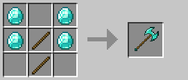
Warhammers
Specs
- +50% Knockback
- +20% Stun Chance
- 7.0 Base Bludgeoning Damage (+1/tier)
- 1.0
Recipie
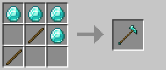
Spears
Specs
- +1.0 Attack Reach
- +30% Velocity Damage
- 5.0 Base Attack Damage (+1/tier)
- 0.8 Attack Speed
Recipie
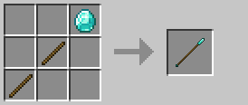
Morningstars
Specs
- +20 Stun Chance
- 3.5 Base Bludgeoning Damage (+1/tier)
- 1.6 Attack Speed
Recipie
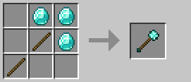
Rapiers
Specs
- +30% Armor Penetration
- +50% Immunity Reduction
- -200% Knockback
- 2.0 Base Attack Damage (+0.5/tier)
- 4.0 Attack Speed
Recipie
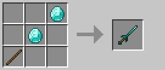
Daggers
Specs
- +20% Crit Chance
- -1.0 Attack Reach
- 4.0 Base Attack Damage (+1/tier)
- 1.8 Attack Speed
Recipie
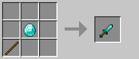
Trident
Requirements
- Requires Marine Smithing to be Unlocked to Craft
Recipie
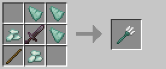
Chorus Leather
Requirements
- Requires Exotic Smithing to be Unlocked to Craft
Recipie
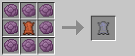
Elytra
Requirements
- Requires Exotic Smithing to be Unlocked to Craft
Recipie
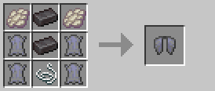
Glass Vial
Requirements
- Requires Etching Venom Alchemy to be Unlocked to Craft
Specs
- The base Component in the other vial recipies
Recipie
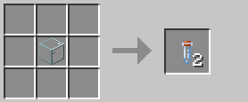
Vial 'o' Rot
Requirements
- Requires Etching Venom Alchemy to be Unlocked to Craft
Specs
- Can be thrown or applied to weapons to apply 50% healing reduction
Recipie
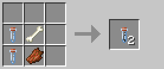
Vial 'o' Poison
Requirements
- Requires Etching Venom Alchemy to be Unlocked to Craft
Specs
- Can be thrown or applied to weapons to apply Poison I (0:30)
Recipie
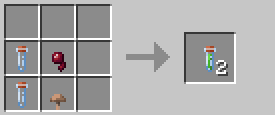
Vial 'o' Holiness
Requirements
- Requires Etching Venom Alchemy to be Unlocked to Craft
Specs
- Can be thrown or applied to weapons to apply 6.0 Instant Radiant Damage
Recipie
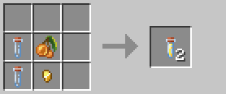
Vial 'o' Hurt
Requirements
- Requires Etching Venom Alchemy to be Unlocked to Craft
Specs
- Can be thrown or applied to weapons to apply 4.0 Instant Magic Damage
Recipie
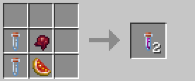
Akari MC by Lilith (Akari_VT)